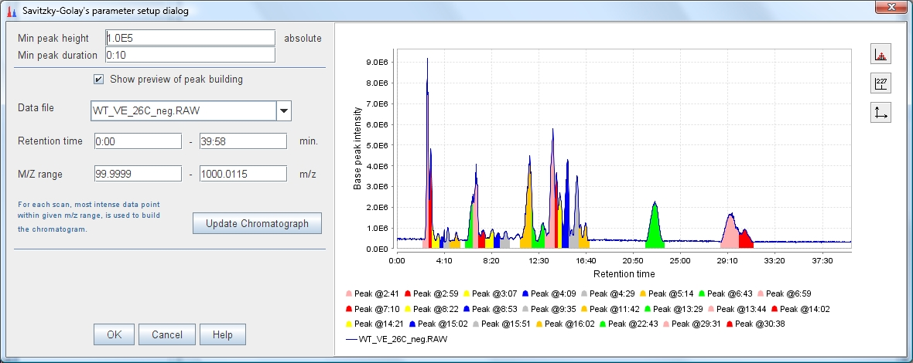

The third step is executed after all chromatograms are finilized, this means all spectrums have been processed
by Mass detector and representative mass data points have been collected into chromatograms. The process of peak
recognition relies on chromatogram's shape, for this reason is possible to use different approaches. Each one of the
next methods try to identify some regions of the chromatogram as a peak and despite the rest as a noise or
background signal
Peak recognizers
Baseline cut-off peak recognition
This peak recognizer set a baseline to cut-off any point below of the analyzed chromatogram. After that it recognizes as a chormatographic peak any region (group of mass spectrum peaks together) that has the minimum characteristics (duration, intensity).
This recognizer uses a three parameters:
"Min peak height"
This value sets the minimum acceptable height (intensity) for a chromatographic peak.
"Min peak duration"
This value sets the minimum acceptable length (time duration) for a chromatographic peak.
"Baseline level"
This value sets the minimum acceptable height (intensity) for a mass spectrum peak to be
considered part of a chromatographic peak.
| Parameter setup dialog
|
|
Chromatogram plot showing detected peaks
|
This peak recognizer sets the level to use as a baseline using the
amplitude of noise (in terms of intensity) of the signal. An algorithm calculates the baseline
level following the next steps:
1.- Calculate the number of bins or regions in which the current chromatogram can be divided in terms
of intensity. The amplitude of these bins is according with the noise amplitude of the signal.
2.- Get the bin with biggest number of points (mass spectrum peaks) that fall inside.
3.- Set the baseline level equal to intensity of the bin with major number of points.
This method follows the concept of mode.

|

|
This recognizer uses a three parameters:
"Min peak height"
This value sets the minimum acceptable height (intensity) for a chromatographic peak.
"Min peak duration"
This value sets the minimum acceptable length (time duration) for a chromatographic peak.
"Amplitude of noise"
This value is the amplitude of the signal in a flat region(in terms of intensity).
Parameter setup dialog
|
Chromatogram plot showing detected peaks
|
This peak recognizer uses the Savitzky-Golay polynomial (A. Savitzky and M. J. E. Golay, Anal. Chem.,
36, 1627 (1964)) to get the second smoothed derivative of the chromatogram intensities. The next
figure (left) presents the shape of a Gaussian peak (a), the first derivative (b), and the second
derivative (c). The figure at right side shows how is divided the signal into possible chromatographic peaks.

|

|
This recognizer uses a two parameters:
"Min peak height"
This value sets the minimum acceptable height (intensity) for a chromatographic peak.
"Min peak duration"
This value sets the minimum acceptable length (time duration) for a chromatographic peak.
Parameter setup dialog
|
|
Chromatogram plot showing detected peaks  |
Parameter setup dialog
|